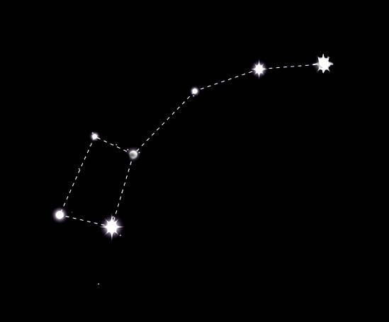

Ursa mică sau Carul mic este una dintre cele mai importante constelaţii pentru astronomi. Ursa mică este o constelaţie din emisfera nordică. Vizibilă din Europa pe tot parcursul anului, este uneori menţionată şi precum "Carul mic". Steaua principala a acestei constelaţii este Steaua Nordului, una dintre cele mai importante stele de pe cer, pentru astronomi. Toate celelalte corpuri cereşti par să se învârtă de-a lungul unei zile folosind această stea ca un pivot. Steaua Nordului are, de asemenea, un rol important în legendele indiene din perioada veda, fiind liderul unui grup de zei.
Ursa mică este similară în formă cu Ursa Mare, uneori menţionată ca şi "Carul Mare". Acesta este motivul pentru care Ursa Mică este uneori numită "Carul Mic". Spre deosebire de Carul Mare, "mânerul" din Carul Mic nu este drept, ci mai degrabă este îndoit în sus. Steaua principală al constelaţiei, Steaua Nordului, rămâne fixă în poziţia sa pe cerul de noapte. Altitudinea poziţiei stelei în partea de nord corespunde cu latitudinea privitorului.
0h 0m la 24h 00m
+65 la 90°
Alpha Ursae Minoris (Polaris sau Steaua Nordului)
Callisto a fost o nimfă frumoasă, care a atras pe Zeus. Mai târziu, ea a dat naştere fiului lui Zeus, Arcaş. Hera, soţia lui Zeus, a transformat-o pe Callisto într-un urs. Ani mai târziu, când Arcaş a fost la vânătoare în pădure, Hera a făcut în aşa fel încât Callisto să îşi întâlnească fiul. Arcaş a fost pe cale de a o ucide în mod neintenţionat pe mama sa, dar atunci Zeus a intervenit. L-a pus Callisto în ceruri ca Ursa mare, iar mai târziu a făcut în aşa fel că Arcaş să i se alăture ca Ursa mică.
Tot anul, dar mai ales primăvara
Regina Etiopiei, Dragonul, Girafa, Ursa mare, Regele Etiopiei